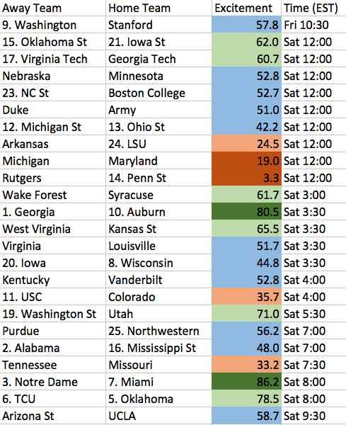

Week 11 Predictions for College Football Excitement, 2017 Season:

I provide excitement ratings for each game between two "strong" Power 5 teams, as well as any game between a top 25 team and a "strong team".
My definition of a "strong" team is a team that is within one game of being .500
My predictions account for many factors to rate excitement, including predicted scoring margin, offensive ratings, and quality of teams in game. The exact formula is a secret.
I aim to publish excitement ratings for the next week of football every Thursday evening.